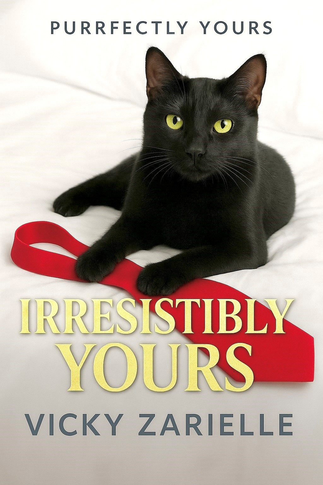

Books
Purrfectly Yours: Irresistibly Yours (Book One)
A billionaire CEO. A marketing exec with no time for distractions. And one sassy cat determined to cause chaos…
Nolan Pierce is powerful, polished and far too serious for his own good. The rules of his empire are simple: no distractions, no complications, no mixing business with pleasure. But Emma’s quick wit and gentle warmth prove harder to ignore than any boardroom negotiation.
Between late night deadlines, awkward almost dates and a viral kiss cam that makes them the city’s favorite “secret couple,” Emma and Nolan find themselves caught in something that feels a lot like fate. And Ruby, the cat who sees everything, is determined to give them a nudge... or a shove.
In a city that thrives on ambition and appearances, Emma and Nolan must decide if love is worth the risk. Because sometimes the greatest fortune isn’t in boardrooms or bank accounts, it’s finding someone who feels like home.
In a world of power, Emma is kindness.
And kindness always wins.
Perfect for fans of Laurie Gilmore, Abby Jimenez and Ali Hazelwood, Purrfectly Yours: Irresistibly Yours is a cozy billionaire boss romance full of witty banter, heartwarming moments and one very judgmental cat.
Purrfectly Yours: Sassily Yours (Book Two)
Coming in January 2026
Stay tuned!